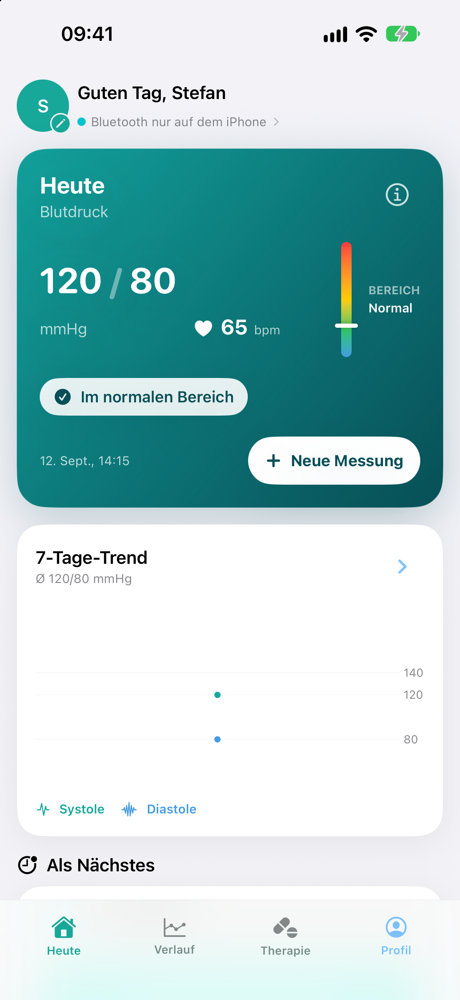
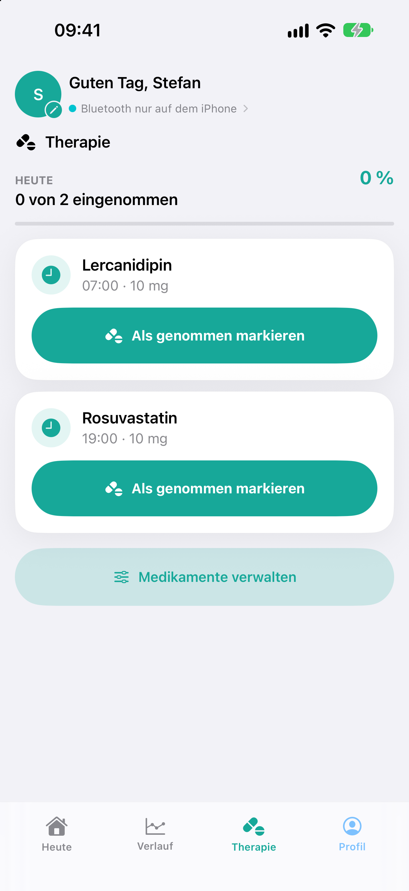
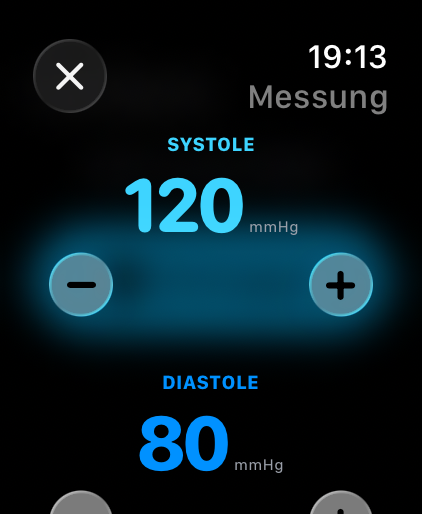
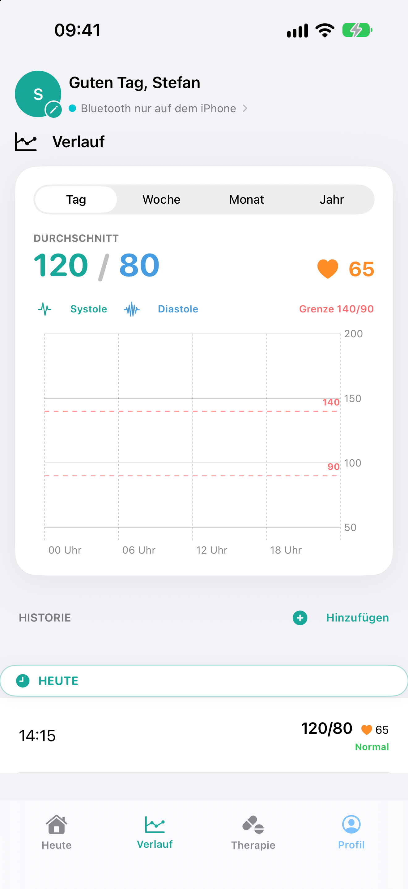

Bluetooth & Messwerte
Unterstützte Werte wie systolischer Blutdruck, diastolischer Blutdruck und Puls werden komfortabel erfasst.
CoreKit Studio für iPhone & Apple Watch
Intelligentes Blutdruck- und Gesundheitsprotokoll für tägliche Messwerte, Medikamente, Apple Health, Apple Watch und exportierbare Arztberichte.



Gesundheitsdaten im Blick
CorSync hilft dir, Blutdruck, Puls und Medikamente strukturiert zu erfassen. Die App ist auf klare Verläufe, lokale Sicherheit und praktische Exporte ausgelegt.
Aktuelle App
iPhone, Apple Watch
CorSync unterstützt dich bei der täglichen Erfassung und Verwaltung deiner Blutdruck- und Gesundheitsdaten. Messwerte, Verlauf, Medikamente und Berichte bleiben übersichtlich an einem Ort.

Funktionen
Unterstützte Werte wie systolischer Blutdruck, diastolischer Blutdruck und Puls werden komfortabel erfasst.
Klare Ansichten und Diagramme helfen dabei, Veränderungen über Tage, Wochen, Monate und Jahre zu verfolgen.
Dosierungen und Einnahmezeiten lassen sich verwalten, inklusive Erinnerungen für den Alltag.
CorSync unterstützt Apple Health und bringt wichtige Funktionen auch auf die Apple Watch.
Messdaten können als übersichtlicher PDF-Bericht exportiert werden, etwa zur Vorbereitung auf Arzttermine.
Face ID, Touch ID und lokale Schutzmechanismen helfen, sensible Gesundheitsdaten sicher zu verwalten.
CorSync dient ausschließlich der Aufzeichnung, Anzeige und Verwaltung von Gesundheitsdaten. Die App ersetzt keine professionelle medizinische Beratung, Diagnose oder Behandlung und trifft keine medizinischen Entscheidungen.
Kontakt
Für Support, Datenschutzanfragen und App-Store-Kommunikation nutzt CoreKit Studio getrennte geschäftliche Kontaktwege.
Rechtliches
DEIN RECHTLICHER NAME ODER FIRMENNAME
GESCHÄFTSADRESSE
PLZ ORT, Deutschland
E-Mail: legal@corekit-studio.de
Datenschutzanfragen: privacy@corekit-studio.de
Ergänze hier deine Datenschutzerklärung passend zu den tatsächlich genutzten App- und Webdiensten.